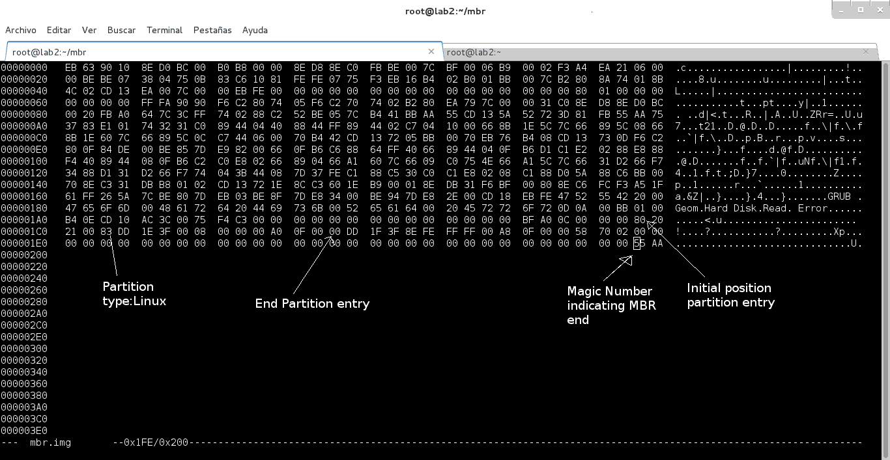

In this note I try to explain how is logical organizate a hard disk (for physical description go here) . We see the traditional partitioning system and the new one(EFI system partition ESP )
The basic motivation for partition is divide a contiguos space of information, the hard disk. This division is logical, then if you take a hammer and hit the disk not one partition helps you. So, in what cases a partition is useful? For example if you divided your disk in 2 logical divisions (the partitions) and installed 2 differents O.S. in the partitions, you can mistake and delete the hard disk, but the other partition remains save ( this is a simplification, don't mistake never...).
Recently the traditional partition system was changed and introduce a new format, the ESP. First we view the Traditional partitioning and then we comment the new.
From Wikipedia (Master Boot Record):

| Address | Description | Size (bytes) |
||
|---|---|---|---|---|
| Hex | Dec | |||
| +000h | +0 | Bootstrap code area (part 1) | 218 | |
| +0DAh | +218 | 0000h | Disk timestamp[4][b] (optional, MS-DOS 7.1-8.0 (Windows 95B/98/98SE/ME), alternatively can serve as OEM loader signature with NEWLDR) | 2 |
| +0DCh | +220 | original physical drive (80h-FFh) | 1 | |
| +0DDh | +221 | seconds (0-59) | 1 | |
| +0DEh | +222 | minutes (0-59) | 1 | |
| +0DFh | +223 | hours (0-23) | 1 | |
| +0E0h | +224 | Bootstrap code area (part 2, code entry at +000h) | 216 (or 222) |
|
| +1B8h | +440 | 32-bit disk signature | Disk signature (optional, UEFI, Windows NT/2000/Vista/7 and other OSes) | 4 |
| +1BCh | +444 | 0000h (5A5Ah if copy-protected) |
2 | |
| +1BEh | +446 | Partition entry #1 | Partition table (for primary partitions) |
16 |
| +1CEh | +462 | Partition entry #2 | 16 | |
| +1DEh | +478 | Partition entry #3 | 16 | |
| +1EEh | +494 | Partition entry #4 | 16 | |
| +1FEh | +510 | 55h | Boot signature[a] | 2 |
| +1FFh | +511 | AAh | ||
| Total size: 218 + 6 + 216 + 6 + 4×16 + 2 | 512 | |||
When we divide the hard disk in the traditional partitioning system, we can create up to four differents partitions. This is the maximum. The partitions are called Primary partitions. Soon, this number was insufficient and was added a new kind of partition: the extended partition for solve the problem. The maximum number of partitions now are...four!! The trick is that now we can do 3 primary partitions and one extended partition and inside this extended partition we can do a lot of partitions (logical partitions) :)
All of this information is saved in the partition table situated in the initial part of the hard disk that was called Master Boot Record (MBR)
Now we see with more detail the differents parts
The MBR is the initial part of the disk, specifically the first 512 bytes or more localted in the first sector of the drive, where is registred two things, the partition table and the executable code that load the operating system. In linux, normally this executable code do the minimal work, and pass the control on a second stage of the loader. This change is motivated because the size of the code is really little. It could have too optional 32bits disk timestamp ? and 32bits disk signature
| Code | Means |
|---|---|
| 0x05 | Extended Partition? |
| 0x0F | Extended Partition? |
| 0x83 | Linux native file system: ext[2,3,4],ReiserFS... |
VBR Volume Boot Record likr MBR but in the partitions
EBR extended boot record
One hard disk can contain only one extended partition that can be subdivided into multiple logical partitions.
Biography: Wikipedia: Disk Partitioning Wikipedia: Master Boot Record